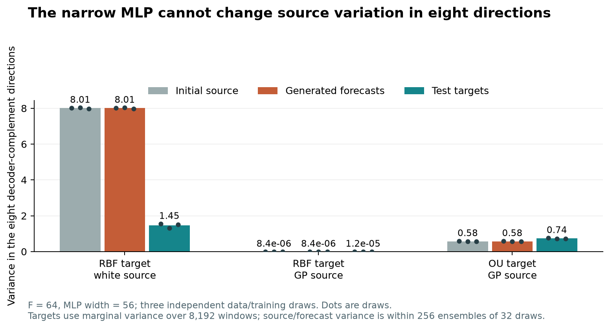
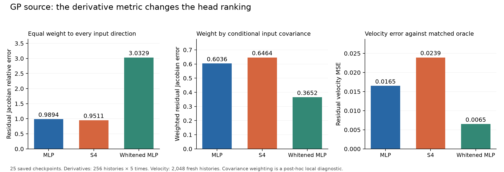
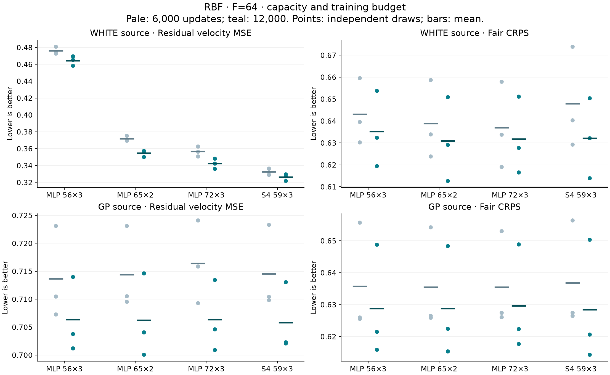
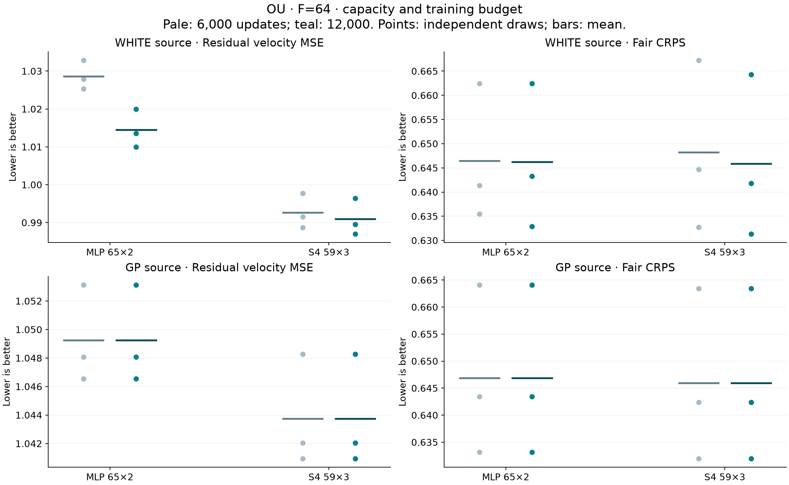
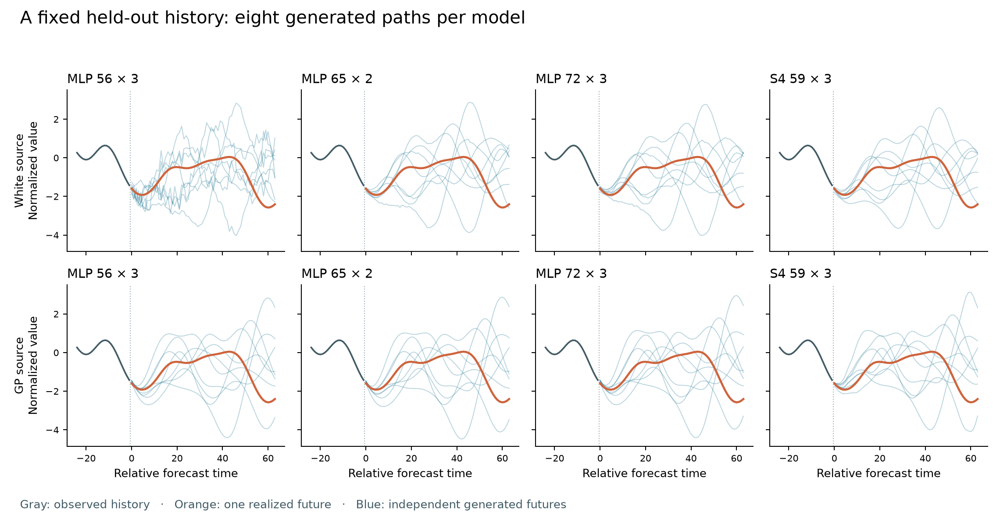
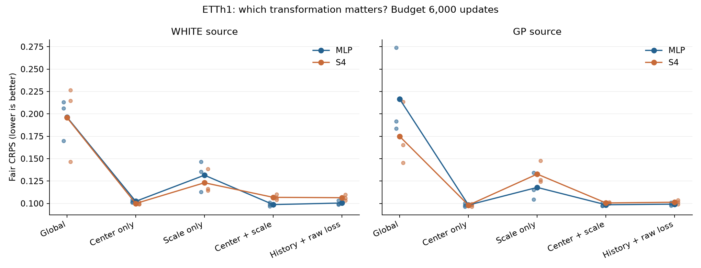
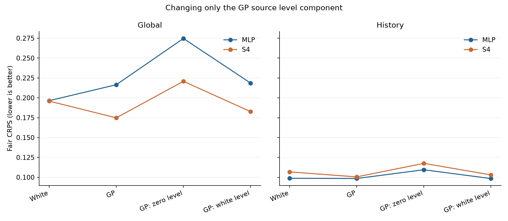
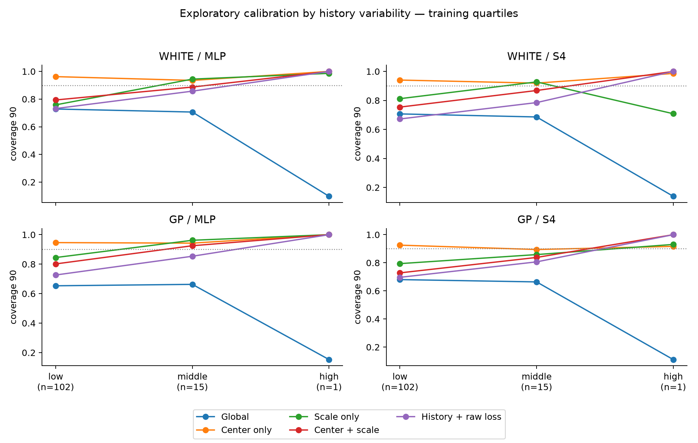

Flow-matching stress test | 25 October 2026
Which differences survive a controlled follow-up?
Can an MLP learn a smooth conditional flow as reliably as S4 when its starting noise is a Gaussian process? The original hypothesis concerns a head that learns the broad shape but misses fine variation. This follow-up separates that question from output-dimension constraints, normalization, noisy supervision and numerical integration.
This extends Lyamin’s revision 0333803 with independent replay and fresh controlled experiments. Original Tasks 1–3 results and pass flags remain unchanged.
Study ledger: 36/36 capacity fits, 84/84 normalization fits and 24/24 label-noise fits. Repeated budget checkpoints are not independent experiments. All planned training fits are complete.
The old numbers reproduce. All 360 kernel-scan checkpoints reproduce their full 8192-pair velocity metrics. Eighteen focused cells also reproduce complete forecast ensembles. The main revisions concern explanation, comparison design and scope.
The old F64 MLP has a structural constraint. Its width 56 final decoder cannot change variance in at least eight directions. With white noise, wider controls close 79.4% and 88.4% of the residual-error gap to S4 and largely remove excess roughness. This concerns the long-horizon extension, not the original F16 model or a universal need for temporal heads.
A Jacobian ranking depends on its metric. For the GP source, S4 remains closer under an unweighted residual-block norm using a reference conditioned on exactly the normalized history. Weighting perturbations by their conditional covariance reverses the MLP/S4 ranking. Neither local derivative metric is a proper forecast score.
Centering dominates the ETTh1 head contrast. GP-source MLP/S4 CRPS changes from 0.2165/0.1748 under global scaling to 0.0982/0.0981 with center-only normalization. Similar CRPS can hide very different interval coverage. This is one previously examined test period.
Conditional-mean supervision helps, but does not solve the task. Residual discrepancy improves in all 12 paired comparisons. Forecast CRPS improves in 6/6 MLP pairs and 4/6 S4 pairs; neither head reaches the exact predictive reference. The intervention uses synthetic population knowledge and does not isolate optimizer noise alone.
Practical conclusion: remove avoidable decoder constraints, specify the complete normalization/source pipeline, and compare forecast scores and uncertainty. No result establishes a universal winner or a general failure of Sundial, TSFlow or MLP heads.
Follow-up study
Design and evidence ledger
| Package | Design | New training runs |
|---|
| Reproduction | 360 old checkpoints; 18 complete forecast cells | 0 |
| Information-matched oracle | 25 original checkpoints; analytic/numerical verification | 0 |
| Capacity and budget | RBF/OU; F64; white/GP; paired fresh draws; 6k/12k | 36 |
| Normalization and GP level | ETTh1 OT; five pipelines; two heads; three seeds; 2k/6k | 84 |
| Conditional-label noise | F16; white/GP; MLP/S4; ordinary/oracle labels; three fresh draws | 24 |
Capacity and label studies each use three independent synthetic draws paired with optimization seeds. Normalization uses one chronological real-data split and three optimization seeds, not three datasets. All new training uses MPS; old CUDA results are replayed on CPU and are not pooled with new estimates. Concurrent GPU processes make logged wall times unsuitable as architecture speed benchmarks.
Configurations and numerical source hashes were frozen locally before scored training. This is documented execution order, not external preregistration. Earlier results informed these follow-up questions. The ETTh1 test period was already examined in previous work; no untouched-test claim is made.
Each budget selects the lowest validation objective in its own training prefix. Both budget checkpoints are evaluated only after the full training trajectory completes. There is no test-based checkpoint selection. Software smokes are separate and excluded from the fit count.
The original three metrics remain available: raw-coordinate PC1 velocity MSE, mean residual-PC velocity MSE and generated/target adjacent-jump roughness. Forecast comparisons additionally report fair CRPS, energy score and interval coverage. Lower residual MSE need not imply lower forecast CRPS; narrow intervals need not be calibrated.
Assignment scope: the F64 capacity study is outside the original rank-two geometry gate. ETTh1 with history normalization also fails that gate: validation GP-velocity top-two energy is 0.821–0.851 across five independent source draws, below 0.90. These are supplementary robustness studies, not additional completed columns of the original stress test. The F16 label-noise experiment returns to the original geometry. See the independent scope_geometry.json audit.
Follow-up study
Replay and the decoder constraint
Kernels, Gaussian windows, normalization, source draws, PCA scoring and forecast metrics are independently reconstructed. Architecture is reused to load checkpoints. The audit checks hashes, numerical agreement and selection metadata.
| Check | Coverage | Outcome |
|---|
| Full velocity replay | 360 × 8192 test pairs | Passed |
| Full forecast replay | 18 × 256 contexts × 32 members | Passed |
| Checkpoint integrity | 360 kernel checkpoints and 24 ETTh1 checkpoint/sample pairs | Passed |
| Frozen original source hashes | Referenced numerical implementation files | Matched |
Forecast replay covers RBF/F64 with white/GP sources and MLP/S4 across three draws, plus OU/F64 GP with MLP/S4 across three draws. The original forecast arrays were omitted from GitHub; they are reconstructed from checkpoints and fixed seeds.
In the historical RBF/white scan, the ratio of mean residual MSE (S4/MLP) is 0.998 at F16/lengthscale 2 and 0.698 at F64/lengthscale 8. Both have F/lengthscale=8; only F64 exceeds the MLP width. Horizon also changes the problem, so fresh width controls are needed.
The MLP velocity has the form v(x, t, h)=Wz(x, t, h)+b. For any projection P perpendicular to the column span of W, Pv=Pb. Therefore after unit-time integration, Px(1)=Px(0)+Pb: the conditional variance in that subspace is unchanged. The claim is independent of the optimizer, training duration and numerical Jacobian threshold.

Old F64/width 56 MLP checkpoints. Forecast/source variance is conditional within ensembles; target marginal variance is a conservative upper bound on average conditional target variance. Small GP values are not zero.Follow-up study
An oracle for normalized history
The original Gaussian oracle knows the raw history and its location/scale. The network sees history after subtracting its mean and dividing by its standard deviation. Integrating out missing location and scale gives a Student-t predictive law with L−1 degrees of freedom when there is no normalization floor. The implemented reference also handles the floor; its truncation correction is negligible in these draws. The conditional future is generally not Gaussian.
The new reference uses the full normalized history. It removes the privilege of knowing raw location and scale, but the network’s learned encoder can still discard information. A remaining discrepancy does not isolate the head from the encoder.
The Gaussian-source conditional flow is consequently a mixture field. Its derivative includes changes in posterior mixture weights; averaging Gaussian component Jacobians would be wrong. The implementation checks quadrature convergence, finite differences, conditional moments, an independent centered-history derivation and direct numerical integration.
| GP-source head | Unweighted local J error | Covariance-weighted local J error | Residual velocity gap to oracle |
|---|
| MLP | 0.989 | 0.604 | 0.01650 |
| S4 | 0.951 | 0.646 | 0.02393 |
| Whitened MLP | 3.033 | 0.365 | 0.00650 |
All three columns are errors, so lower is better. The derivative comparison uses 256 histories and five times on the original checkpoints. Velocity discrepancy uses 2048 fresh histories. Weighting by conditional input covariance was added after the initial comparison and is explicitly exploratory. It describes local sensitivity weighted by covariance, not forecast accuracy or a proof of optimization causality.

The MLP/S4 ordering changes with the derivative metric. Equal treatment of tiny-variance directions is consequential.Finite covariance-scaled probes cover all 25 checkpoints and reproduce this ordering within the 15-model GP group, in residual input/output PCs: relative errors are approximately 0.368 for whitened MLP, 0.597 for raw MLP and 0.648 for S4. Shared directions and two fixed scales give actual velocity changes, not just derivatives. The supplementary report retains absolute errors and denominators. This post-hoc check does not establish an optimization mechanism or forecast superiority.
Fresh capacity/source/budget intervention
Removing the output bottleneck
| Source | Head | Residual MSE | Fair CRPS | Roughness ratio |
|---|
| white | MLP 56 × 3 | 0.4644 | 0.6352 | 2.677 |
| white | MLP 65 × 2 | 0.3546 | 0.6309 | 1.063 |
| white | MLP 72 × 3 | 0.3423 | 0.6318 | 0.997 |
| white | S4 59 × 3 | 0.3262 | 0.6321 | 0.972 |
| gp | MLP 56 × 3 | 0.7063 | 0.6287 | 0.989 |
| gp | MLP 65 × 2 | 0.7063 | 0.6287 | 0.987 |
| gp | MLP 72 × 3 | 0.7063 | 0.6296 | 0.988 |
| gp | S4 59 × 3 | 0.7058 | 0.6284 | 0.970 |
F64/L128, lengthscale 8, three fresh paired draws. Parameter counts: original MLP 73960; width 65/depth 2 MLP 73953; S4 74038. Width72/depth 3 is a larger same-depth control (114328 parameters). Width65 removes the fixed decoder nullspace; LayerNorm can still numerically attenuate a derivative direction.
The near-equal-budget MLP closes 79.4% of the mean white-source residual-error gap to S4; the wider same-depth MLP closes 88.4%. Roughness approaches the target, while a smaller velocity-error advantage for S4 remains. Forecast CRPS gives a different ordering.
A fixed target-PCA basis gives the same white-source ordering. Width and depth change together in the equal-budget control; interpret it alongside the decoder invariant, wider same-depth model and GP control.
RBF | three independent data draws
Capacity across sources and budgets
The same four heads are compared at 6000 and 12000 updates. Each point is a data draw paired across heads; pale and teal points from that draw share a training trajectory. The small horizontal bars show means.

Each point is an independent draw; budget checkpoints from the same draw are correlated. Raw velocity error and forecasting quality are shown separately.With white noise, widening consistently reduces the original MLP’s velocity error. The forecast-score differences are much smaller and draw-dependent. With a GP source, the four heads are close on both metrics: the decoder restriction matters far less when the source already has little variance in the restricted directions.
Fresh capacity/source/budget intervention
Does the long-window comparison generalize to OU?
| Source | Head | Residual MSE | Fair CRPS | Roughness ratio |
|---|
| white | MLP 65 × 2 | 1.0145 | 0.6462 | 0.976 |
| white | S4 59 × 3 | 0.9910 | 0.6458 | 0.960 |
| gp | MLP 65 × 2 | 1.0492 | 0.6469 | 0.975 |
| gp | S4 59 × 3 | 1.0438 | 0.6459 | 0.992 |
OU has substantially more small-scale target variation than the original smooth RBF geometry. The same architecture comparison tests whether an apparent head effect is specific to a nearly low-rank target. No cell outside the original top-two-energy gate is retroactively relabeled as the original assignment’s main task.
S4 reduces mean residual velocity error by 2.32% with white noise and 0.52% with a GP source. Mean CRPS differences are much smaller, and a white-source draw reverses the forecast ordering. The remaining velocity advantage is evidence about these models and budgets, not a uniform forecast advantage.
The two budget selections share the same training path. Longer training is a finite-budget sensitivity check, not a convergence proof. Per-draw values and per-budget contrasts are retained in the CSV/JSON tables, even when head orderings differ across metrics.

Each point is an independent draw; budget checkpoints from the same draw are correlated. Raw velocity error and forecasting quality are shown separately.Follow-up study
What the decoder restriction looks like in generated paths
This example uses the first held-out context of the first fresh draw and the first eight ensemble members. Indices were fixed without selecting an unusually good or bad forecast. All panels share axes. The orange curve is one realized future, not a unique correct trajectory for every generated sample.

RBF, F64, data seed 607041, validation-selected 12000-update checkpoints. The white-source original MLP retains visibly irregular variation; both wider decoders and S4 produce smoother paths. Quantitative conclusions use all contexts and all three draws.The GP source supplies little variation in the original decoder’s fixed nullspace, so the same representational restriction need not create visible jitter there. Smoothness by itself does not establish conditional forecast quality: broad shape, uncertainty and CRPS remain separate checks.
| Untrained source / geometry | Fair CRPS | Roughness ratio | Full rule passes |
|---|
| RBF / white | 0.7343 | 9.601 | 0/3 |
| RBF / gp | 0.7337 | 0.846 | 0/3 |
| OU / white | 0.6732 | 2.629 | 0/3 |
| OU / gp | 0.6731 | 0.901 | 0/3 |
The zero-flow baseline returns the source itself. It already passes the roughness condition in every GP group, but passes the complete assignment rule in none. White and GP have similar pointwise marginal variances and therefore similar marginal CRPS; their temporal dependence and energy scores differ. These are frozen-test diagnostics with no model selection.
Follow-up study
Do forecast comparisons survive finer integration?
| Geometry / source | Head compared with S4 | CRPS difference: 64 steps | CRPS difference: 128 steps |
|---|
| RBF / white | MLP 56 × 3 | 0.00308 | 0.00322 |
| RBF / white | MLP 65 × 2 | -0.00123 | -0.00108 |
| RBF / white | MLP 72 × 3 | -0.00030 | -0.00033 |
| RBF / gp | MLP 56 × 3 | 0.00030 | 0.00041 |
| RBF / gp | MLP 65 × 2 | 0.00031 | 0.00042 |
| RBF / gp | MLP 72 × 3 | 0.00121 | 0.00130 |
| OU / white | MLP 65 × 2 | 0.00037 | 0.00045 |
| OU / gp | MLP 65 × 2 | 0.00095 | 0.00095 |
Negative differences favor the named MLP; positive differences favor S4. Means use all three paired draws. Every capacity model is checked at the final budget, using the same 256 contexts, 32 source samples per context and unchanged validation-selected checkpoint. The original 64-step score remains primary.
The check covers 36/36 models. The largest absolute change in a model’s mean CRPS is 0.00043. The sign of the mean head contrast changes in 0/8 comparisons. Individual draw contrasts and per-context changes are retained in the solver summary.
This diagnostic was added after seeing small head differences in the first two draws. It tests numerical sensitivity, not a new model or a tuned solver. Independent source/history reconstruction, checkpoint hashes and a64-step replay precede every finer integration. Two step counts do not prove convergence to the exact ODE solution.
| Label study: CRPS | Ordinary: 64 | Mean label: 64 | Ordinary: 128 | Mean label: 128 |
|---|
| white / MLP | 0.50730 | 0.48195 | 0.50750 | 0.48208 |
| white / S4 | 0.50595 | 0.48280 | 0.50612 | 0.48296 |
| gp / MLP | 0.49319 | 0.47853 | 0.49342 | 0.47863 |
| gp / S4 | 0.49228 | 0.47983 | 0.49240 | 0.47962 |
The label study also checks every model and all 256 × 32 paths. The largest individual mean-CRPS change is 0.00067; 0 paired label contrasts reverse sign. Full MPS 64 replay matches saved arrays; a separate CPU 128 replay checks eight contexts of every model. These numerical checks do not remove sampling or finite-budget uncertainty.
ETTh1 OT | complete normalization pipelines
Separating centering, scale and objective
| Pipeline | White MLP | White S4 | GP MLP | GP S4 | Ridge baseline |
|---|
| Global | 0.1964 | 0.1959 | 0.2165 | 0.1748 | 0.1015 |
| Center only | 0.1023 | 0.0999 | 0.0982 | 0.0981 | 0.0973 |
| Scale only | 0.1315 | 0.1231 | 0.1179 | 0.1327 | 0.0983 |
| Center + scale | 0.0987 | 0.1068 | 0.0985 | 0.1005 | 0.0936 |
| History + raw-unit loss | 0.1005 | 0.1064 | 0.0992 | 0.1013 | 0.0943 |
Fair CRPS at 6000 updates, averaged across three paired seeds. Every forecast is mapped back to the same train-standardized units. Primary scoring uses all 118 chronological test windows with 64 members; the original 64-context subset is also retained, so these means must not be directly equated to the earlier 64-context CUDA table.
Center-only makes level translation equivariant by construction. Scale-only changes scale handling without removing the mean. History combines them. The raw-unit-loss control retains history coordinates and their source, but multiplies velocity errors by history scale before squaring and uses the matching validation objective.
Center-only nearly eliminates the mean GP-source MLP/S4 score difference. Adding scale normalization produces similar CRPS with substantially narrower intervals. Scale-only is less effective here, and reweighting history-coordinate loss back to original units does not restore center-only coverage.
These are interventions on entire pipelines. In original units, a fixed model-coordinate source becomes location + scale × source; centering/scaling therefore also changes its physical interpretation. Results do not uniquely prove that input extrapolation alone caused an earlier head difference.

Seed points remain visible. Within-period block-bootstrap intervals and individual contrasts are in the machine-readable summary.Follow-up study
Does the constant component of a GP source matter?
| Pipeline | Source | MLP CRPS | S4 CRPS |
|---|
| global | White | 0.1964 | 0.1959 |
| global | GP | 0.2165 | 0.1748 |
| global | GP: zero mean | 0.2747 | 0.2208 |
| global | GP: white-noise level | 0.2185 | 0.1826 |
| history | White | 0.0987 | 0.1068 |
| history | GP | 0.0985 | 0.1005 |
| history | GP: zero mean | 0.1095 | 0.1175 |
| history | GP: white-noise level | 0.0984 | 0.1030 |
GP-zero-level subtracts each source curve’s mean. GP-white-level preserves its centered shape and replaces the mean with an independent Gaussian of variance 1/F, matching the level variance of a white source. Both interventions are applied consistently at training, validation and generation.
These controls do not preserve total source variance. Zero-level GP is intentionally singular; a deterministic history-dependent flow may still map it into a curved subset, so missing stochastic degrees of freedom must not be mistaken for a guaranteed forecasting benefit. Interpret score, coverage, spread and budget jointly.
Removing the GP level worsens mean CRPS for both heads in both pipelines. Replacing it with the white-source level variance does not rescue the globally scaled MLP. Thus these controls do not support the GP constant component alone as an explanation for that model’s earlier weakness.

Source-level controls distinguish the effect of broad GP level variation from its centered temporal shape.Oracle-assisted mechanism test | not a deployable method
Removing conditional target noise
| Source | Head | Noisy-label residual gap | Noisy-label CRPS | Mean-label residual gap | Mean-label CRPS |
|---|
| white | MLP | 0.05967 | 0.5073 | 0.04713 | 0.4820 |
| white | S4 | 0.05177 | 0.5060 | 0.04614 | 0.4828 |
| gp | MLP | 0.01582 | 0.4932 | 0.01314 | 0.4785 |
| gp | S4 | 0.02466 | 0.4923 | 0.02105 | 0.4798 |
Residual gap is the directly measured mean squared velocity discrepancy from the normalized-history oracle, in source-specific residual PCs. It is not noisy test loss minus an estimated noise floor. Compare the paired label modes within each source.
Mean labels reduce residual oracle discrepancy in 12/12 pairs. CRPS improves in 6/6 MLP pairs and 4/6 S4 pairs. Both heads still trail the predictive reference. This supports a finite-budget sensitivity to supervision, not a complete explanation of the remaining error.
Direct samples from the normalized-history predictive reference give mean fair CRPS 0.35969; the raw-history Gaussian reference gives 0.34823. The latter uses extra information. These baselines use 64 members on the same contexts and no ODE solver; network scores use 32 members. Fair-score correction makes them comparable in expectation, with different Monte Carlo variance.
Within each source and data draw, paired runs see the same complete 6000 × 256 stream of inputs, histories and times. Only the regression target changes: ordinary CFM velocity y−epsilon versus its information-matched conditional expectation. This removes conditional label noise while retaining the population optimum. The source/target distribution is known analytically only because this is a synthetic diagnostic.
Both label modes use the same oracle-discrepancy validation criterion. This is intentional for the mechanism test and differs from ordinary noisy-label checkpoint selection. Test references are precomputed with frozen formulas and never used for selection. Each of three fresh data draws has its own optimization seed.
If denoising improves a head, it supports sensitivity to conditional-mean supervision at this budget; it does not establish an intrinsic conditioning defect. The oracle also replaces each finite training pool’s realized future with population knowledge, so this intervention does not isolate optimizer noise from finite-data target noise. If a gap remains, finite capacity, architecture and optimization remain possible contributors. This is not an available real-data forecasting algorithm.
Follow-up study
Calibration, uncertainty and scope
| Pipeline | White MLP | White S4 | GP MLP | GP S4 | Ridge baseline |
|---|
| Global | 0.720 | 0.700 | 0.650 | 0.673 | 0.975 |
| Center only | 0.959 | 0.938 | 0.946 | 0.921 | 0.977 |
| Scale only | 0.784 | 0.826 | 0.861 | 0.803 | 0.838 |
| Center + scale | 0.807 | 0.771 | 0.819 | 0.744 | 0.842 |
| History + raw-unit loss | 0.750 | 0.689 | 0.745 | 0.713 | 0.840 |
These are coverages of nominal 90% empirical intervals. Finite ensembles introduce sampling bias: even draws from the correct predictive law need not give 90% coverage. Read coverage, interval width and CRPS together. Ridge is refitted under each normalization, with validation-selected penalty and resampled training residuals for uncertainty. It is a direct forecaster, using neither a flow nor a GP source.
Three synthetic draws do not support a broad benchmark claim. ETTh1 supplies one already-examined series and test period. Its descriptive intervals resample paired training seeds and circular blocks of 4 or 8 forecast contexts; they do not estimate uncertainty across independent datasets. Multiple exploratory contrasts are reported without confirmatory significance claims.
Checkpoints selected at the final available update: capacity 12/36; normalization 0/84; label intervention 11/24. Fixed budgets do not imply convergence. Euler 128 covers full capacity and label ensembles, and limited normalization subsets. It tests numerical sensitivity without proving exact integration. CPU/MPS replay tolerance is recorded.
Tiny covariance eigenvalues and whitening floors strongly affect normalized errors; raw, fixed-target-basis and noise-floor diagnostics must remain visible.
A source matching a raw GP kernel does not match the normalized future distribution. The information-matched future is a scale mixture, not generally Gaussian. The new same-information oracle corrects that reference distinction; it does not convert every source into a matched target distribution.
The original literal 20% rule and earlier all-fail outcome remain unchanged. All 24 new label-study models pass the roughness condition; none passes the full velocity-ratio rule. That equality-style raw-error rule mixes reducible error with different conditional noise levels. This follow-up adds evidence without rewriting the assignment or claiming a general architecture winner.
Exploratory check | training-only quartile boundaries
Calibration by history variability
Test windows are grouped by the standard deviation of the observed history. Boundaries are the 25th and 75th percentiles of training histories, fixed before inspecting grouped forecast scores. The groups contain low: 102 windows, middle: 15 windows, high: 1 window. All 84 fits and both budgets are included in the saved tables.
The high-variability group contains only one test window. Its value is a single case, not evidence about a general high-variability regime. The low group dominates this period. Coverage differences there accompany large changes in interval width without comparably large changes in point-prediction MSE.
| Low group | Coverage (90%) | Interval width | Fair CRPS | Point MSE |
|---|
| white / MLP | 0.962 → 0.732 | 0.852 → 0.393 | 0.1017 → 0.0999 | 0.0336 → 0.0330 |
| white / S4 | 0.940 → 0.672 | 0.767 → 0.349 | 0.1000 → 0.1068 | 0.0341 → 0.0362 |
| gp / MLP | 0.946 → 0.726 | 0.745 → 0.389 | 0.0984 → 0.1002 | 0.0312 → 0.0323 |
| gp / S4 | 0.925 → 0.696 | 0.670 → 0.365 | 0.0970 → 0.1025 | 0.0311 → 0.0328 |
Table: center-only → history with raw-unit loss, averaged over three seeds. Group-weighted scores recover the overall means. These are descriptive partitions of one period, not independent replications.

All five pipelines. Training quartiles define low, middle and high history variability. Companion figures report interval width and fair CRPS; ridge baselines and every seed are also retained.Follow-up study
What changes in the earlier interpretation?
The previous score tables reproduce. The follow-up changes how several results should be explained, rather than invalidating the earlier experiments. The comparison below refers to README.md sections 10–11 and docs/kernel_scan_findings.md at revision 0333803.
| Earlier interpretation | New evidence | Defensible reading |
|---|
| S4 is closer to the GP residual Jacobian; the small directions are largely unlearned. | A normalized-history oracle retains the unweighted ordering, but covariance-weighted derivatives and finite changes favor MLP. The raw-history Gaussian oracle has extra information. | Report the reference information and perturbation geometry. A local derivative error does not identify an optimization mechanism or forecast ranking. |
| History normalization removes the ETTh1 source/head interaction, attributed to level extrapolation. | The center/scale factorial and raw-unit-loss control compare complete pipelines, including the source in original units. Coverage is evaluated alongside CRPS. | Normalization is consequential. Isolating one cause requires more than the global-versus-history contrast; low CRPS does not guarantee calibrated intervals. |
| The strongest white-source S4 advantage appears at F64. | The original MLP cannot change variance in at least eight output directions. Fresh wider controls largely close the residual-error gap and restore near-target roughness. | A restricted decoder is a major confound. A smaller S4 velocity advantage remains; it does not translate into uniform forecast superiority. |
| The scan gives no material GP-source forecast reason to replace the MLP head. | Fresh capacity/source comparisons, longer budgets, finer integration and an oracle-label intervention test this interpretation from different angles. | Keep conclusions specific to the source, geometry, information set and budget. These small-model studies do not establish a general architecture winner. |
The original assignment’s literal success flags are preserved. The F64 and real-data studies are extensions outside its main geometry gate. The original F16 question is addressed separately by the information-matched oracle and conditional-label experiment.
Follow-up study
Reproduction and handoff
No new commit or push is created for this work. The base revision is 0333803. New implementations, configurations, protocols and tests are separate from original experiment files. Checkpoints, generated arrays and run records remain in results/followup-*; figures and aggregate tables are in output/followup-*.
| Purpose | Entry point |
|---|
| Old 360 + 18 replay | scripts/audit_followup_reproduction.py |
| Information-matched oracle | scripts/study_normalized_history_oracle.py |
| Capacity experiments | python -m fm_stress.followup_capacity |
| Normalization experiments | python -m fm_stress.followup_normalization |
| Label-noise preparation/training | python -m fm_stress.followup_label_noise |
| Independent checks | scripts/check_followup_capacity.py; check_followup_normalization.py; check_normalized_history_oracle.py |
| Scope and execution order | docs/followup_research_plan.md |
Use the repository virtual environment and MPS access for scored training. Reproduction commands, full configurations and source hashes accompany each study. Missing or incompatible artifacts cause the runners to fail rather than silently mixing configurations. Independent checks distinguish reused architecture from independently rebuilt data and metrics.
| Final verification coverage | Status |
|---|
| Capacity: 72 checkpoints; all 589,824 test velocity predictions; 2,754 checks | Passed |
| Normalization: 84 fits, 168 checkpoint artifacts; 56 aggregate cells; frozen strata | Passed |
| Label intervention: 24 fits; six complete prepared streams; source/data hashes | Passed |
| Euler 64/128: 36 capacity + 24 label models; independent all-array CRPS checks | Passed |
| Project test suite: 211 tests | Passed |
The most defensible recommendation is conditional: first remove avoidable decoder constraints and normalize consistently, then compare proper forecasting scores and calibration across sources. A temporal head may be useful in a particular regime; neither its Jacobian norm nor a comparison against a structurally restricted MLP establishes that it is universally required.